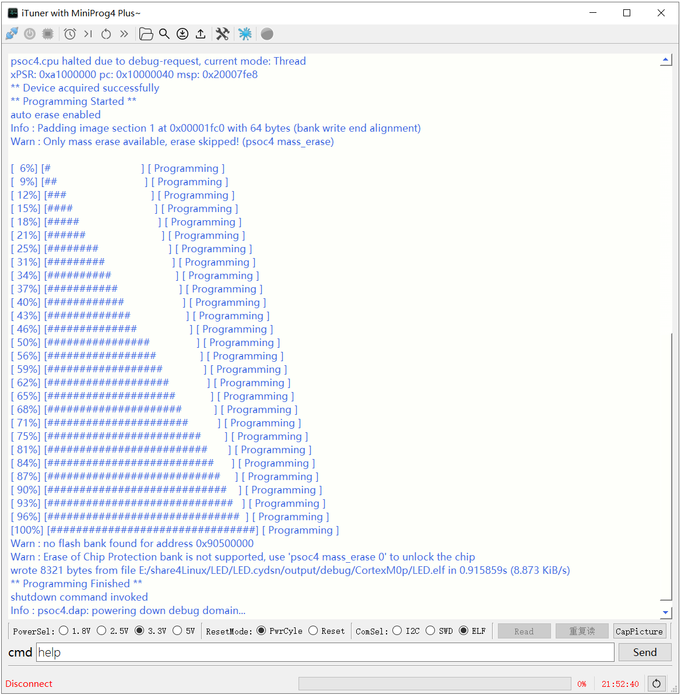

在Linux下编译PSoC4 （PSoC Creator Export Makefile）
这两天研究了下如何在Linux下编译PSoC4，记录并分享之。
注： 并非完全从0开始在linux下搞起，而是通过PSoC Creator Export Makefile到linux下编译。
Step1：WIN10下安装linux子系统，应用商店直接安装就好，我选择了Ubuntu 18.04.6 LTS，装好后update下即可。
注：强烈建议安装32位版本的，可以免去后面很多弯路。
Step2：WIN10下通过PSoC Creator创建工程并编译运行OK。
Step3：选择菜单Project -> Export to IDE , 选择Makefile -> Next -> Select ALL, Next。
Step4：完成后确认工程路径下是否有生成相应的makefile。
Step5：将整个Workspace工程copy至linux下并进入makefile目录。
Step6: 下载并安装Linux交叉编译链， 从 https://launchpad.net/gcc-arm-embedded/+download 下载：
gcc-arm-none-eabi-5_4-2016q3-20160926-linux.tar.bz2 (md5)
对比目前Win10下 PSoC Creator 4.4的GCC版本：ARM GCC 5.4-2016-q2-update，上面的下载连接中有2016-q2的版本，但是没有update的，也不晓得update了啥，所以就先用q3的吧。
注：一定要用gcc-arm-none-eabi-xx的版本，如果使用arm-linux-gnueabi-gcc编译，会提示
arm-linux-gnueabi-gcc: error: nano.specs: No such file or directoryStep7： 将下载的压缩包copy至linux系统中，并解压
cd /opt
tar xjf gcc-arm-none-eabi-5_4-2016q3-20160926-mac.tarStep8: 测试你的gcc是否可用，不出意外你也会得到和我一样的error：Exec format error
cd /opt/gcc-arm-none-eabi-5_4-2016q3/bin
./arm-none-eabi-gcc -v
-bash: ./arm-none-eabi-gcc: cannot execute binary file: Exec format errorStep9: 这是因为安装的ubuntu是64位的，而交叉编译链是32位的原因，然后就各种折腾，直到找到下面这个：
sudo apt update
sudo apt install qemu-user-static
sudo update-binfmts --install i386 /usr/bin/qemu-i386-static --magic '\x7fELF\x01\x01\x01\x03\x00\x00\x00\x00\x00\x00\x00\x00\x03\x00\x03\x00\x01\x00\x00\x00' --mask '\xff\xff\xff\xff\xff\xff\xff\xfc\xff\xff\xff\xff\xff\xff\xff\xff\xf8\xff\xff\xff\xff\xff\xff\xff'Step10: 再执行./arm-none-eabi-gcc -v 就可以看到：
song@MyPC:/opt/gcc-arm-none-eabi-5_4-2016q3/bin$ ./arm-none-eabi-gcc -v
Using built-in specs.
COLLECT_GCC=./arm-none-eabi-gcc
COLLECT_LTO_WRAPPER=/opt/gcc-arm-none-eabi-5_4-2016q3/bin/../lib/gcc/arm-none-eabi/5.4.1/lto-wrapper
Target: arm-none-eabi
Configured with: ........
Thread model: single
gcc version 5.4.1 20160919 (release) [ARM/embedded-5-branch revision 240496] (GNU Tools for ARM Embedded Processors)
song@MyPC:/opt/gcc-arm-none-eabi-5_4-2016q3/bin$在此之前 我还按照网上的教程执行了下面的操作，不晓得是否是必须的。
dpkg --print-foreign-architectures
sudo apt install lsb
sudo apt-get update
sudo apt-get purge libc6-dev
sudo apt-get install libc6-dev
sudo apt-get install libc6-dev-i386
sudo dpkg --add-architecture i386
sudo apt-get update
sudo apt-get install libc6:i386 libncurses5:i386 libstdc++6:i386 zlib1g:i386
sudo apt-get install lib32ncurses5
sudo apt-get install lib32z1至此，编译环境的前期工作准备好了。
Step11： 打开并修改工程路径下的 platform_debug.mk ， 设置TOOLCHAIN_DIR为编译链的路径：
TOOLCHAIN_DIR ?= /opt/gcc-arm-none-eabi-5_4-2016q3/binStep12： 然后直接make就可以啦， 一片刷刷的字符串滚过后，发现如下Error 127：
Export/postbuild.sh output/debug/CortexM0p/LED.elf output/debug/CortexM0p
Export/postbuild.sh: 7: Export/postbuild.sh: ./Export/cyelftool: not found
makefile:22: recipe for target 'output/debug/CortexM0p/LED.hex' failed
make: *** [output/debug/CortexM0p/LED.hex] Error 127Step13： 到output/debug/CortexM0p目录下会发现已经生成了elf文件，在执行最后一步Export/postbuild.sh 时出错了，
./Export/cyelftool -C "$1" --flash_row_size 256 --flash_size 262144 --flash_offset 0x00000000原因是还么有cyelftool，没法将生成的elf文件转换为hex文件，没关系，先烧录elf试试看是否能正常运行，连接MiniProg4 Plus和目标板，打开iTuner，然后选择elf文件下载：

然后就会看到闪灯了，开心 ~
Step14： 没有生成hex文件，不够完美，于是修改Export/postbuild.sh ：
/opt/gcc-arm-none-eabi-5_4-2016q3/bin/arm-none-eabi-objcopy -O ihex "$1" output/debug/CortexM0p/led.hex再次Make，然后在output/debug/CortexM0p/ 目录下 就会生成hex文件了。
Step15： 再次使用iTuner下载hex文件，也可以正常下载并运行。但是打开PSoC Program选择该hex文件，却提示
Hex File parsing failure. Unknown record type.
原因是生成的hex文件并没有按照 “ –flash_row_size 256 –flash_size 262144 –flash_offset 0x00000000” 来组织的。
Step16： 再次查看Export目录，发现有WIN版的 cyelftool.exe，以及postbuild.bat，将LED.elf Copy到当前目录下并修改postbuild.bat 如下：
cyelftool.exe -C LED.elf --flash_row_size 256 --flash_size 262144 --flash_offset 0x00000000 然后双击运行 postbuild.bat ，就会在当前路径下生成相应的hex文件了。
Step17： 对比WIN PSoC Creator生成的hex文件与通过cyelftool.exe 生成的Linux版的hex文件，发现9030部分的校验和并不一致，看来编译链不同，还是有一定的差异~ 于是继续放狗搜索，居然在Infineon官网上发现了CyElfTool的源码：
Infineon-CyElfTool-1.0.1.8.zip
下载并copy至linux下编译，居然是用CMake来编译的，一番操作下来还是没搞定，于是果断放弃，回头找个懂这个的大佬来帮我搞下就好~
后记：
青岛这两天下了久违的雪，冻成狗了~~
感谢~